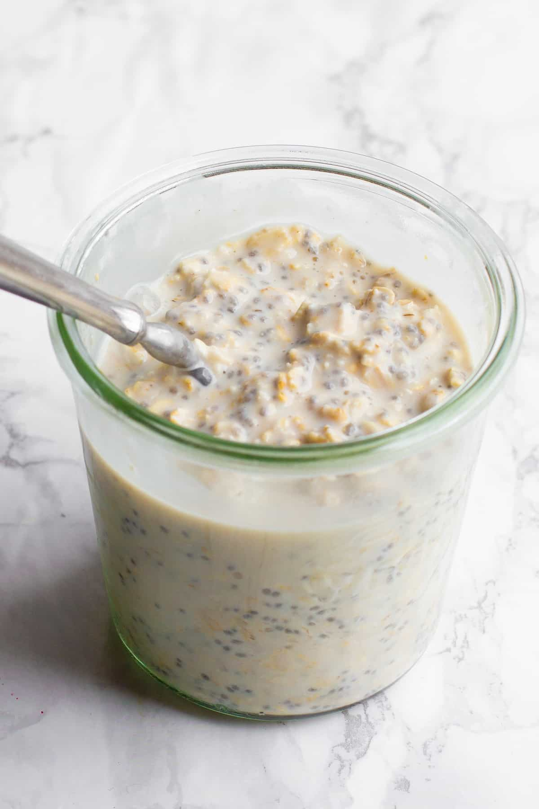

Overnight Oats

Description
I have made this for breakfast nearly every morning for over two years. Simple and healthy. Especially for runners.
Ingredients
- Mason jar
- 0.5 cup old-fashioned oats
- 1 tbsp hemp hearts
- 1 tsp ground cinnamon
- 0.25 tsp ground turmeric
- Pinch of black pepper
- A big scoop of peanut butter
- 0.75 cup unsweet almond milk
Steps
- Add all ingredients to mason jar.
- Close the lid and shake vigorously.
- Place in fridge overnight.
- Put it in a bowl the next morning and reheat in the microwave. Enjoy!